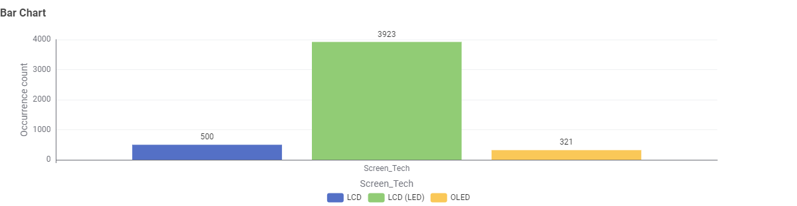
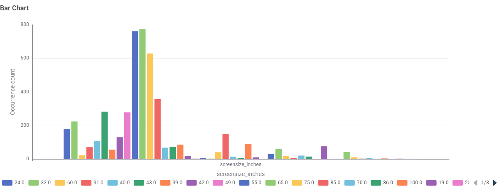
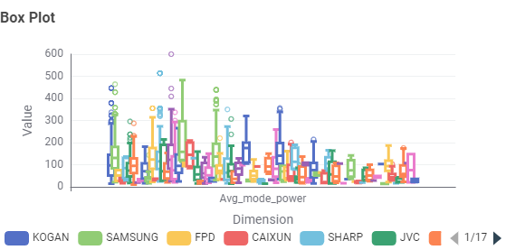

Television Energy Tips
Size & technology matter. Larger screens and older technology (e.g., plasma) use more energy. Modern LED/LCD and OLED sets are generally more efficient.
Ways to Cut TV Running Costs
- Use the TV's Energy Saver or Eco mode and reduce brightness where comfortable.
- Disable "always-listening" voice features if you don't use them, as they can add standby power consumption.
- Consider the star rating and annual kWh on the energy label when purchasing a TV.
TV Energy Insights: Data Story
This section presents findings from the Australian Government's Television Energy Rating dataset. The aim is to help Australian consumers make informed decisions about technology, size, brand, and efficiency.
Question 1: What types of TV screen technologies are currently available in Australia, and which are the most frequent?

Screen technologies available: LCD, LCD (LED), and OLED.

LCD (LED) is the most frequent technology, with 3,923 occurrences, followed by LCD with 500 and OLED with 321. This means LED-backlit LCD screens are the dominant and most common TV technology in this dataset, accounting for roughly 82% of all TVs, while OLED is the least common at about 7%.
Question 2: What screen sizes are available, and which are the most frequent?

Screen sizes range from 16" to 116", offering a variety of options from compact TVs to extra-large screens.
Question 3: Which brands have the largest number of models?

Kogan has the greatest number of different models, with approximately 800 models.
Question 4: Which type of screen technology consumes the least amount of power?

LCD consumes the least amount of power, with an average power consumption of approximately 85 W.
Question 5: What is the relationship between screen size and power use?

There is a positive relationship between screen size and power consumption. In general, larger TVs consume more power than smaller TVs. However, power usage varies between models, so the relationship is not perfectly linear.
Question 6: What is the relationship between star rating and screen size?

There is no strong relationship between screen size and star rating. Ratings vary across different screen sizes, with most ratings falling between 4 and 7 stars. Larger TVs do not consistently receive higher or lower ratings than smaller TVs. This suggests that screen size alone does not strongly affect the star rating.
Question 7: Are there differences in power consumption between brands?


Power consumption varies between brands. Spark Electronics has the highest average power consumption at approximately 235 W, while Dreame has the lowest among the brands shown at around 145 W. The box plot also shows that some brands, such as Samsung and Kogan, have a wider range of power consumption across their models. This means that power usage can vary significantly both between brands and between models of the same brand.
Question 8: What other questions could be investigated with this dataset?
1. Which brand offers the most energy-efficient TV models?
2. Does TV price increase with screen size?
3. Which screen technology is the most common?